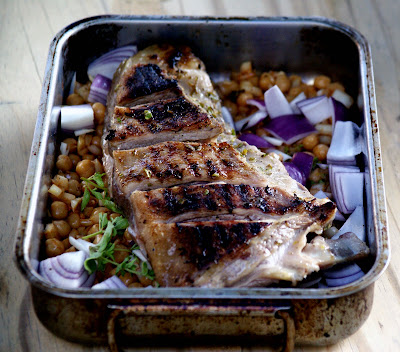
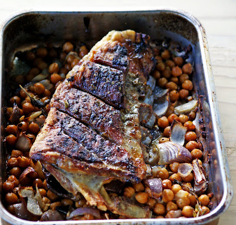

Lamb Breast

Description
Although there isn’t an awful lot of meat on this particular cut, it is fatty and the inherent
richness should leave you feeling sated without being overly full. As the lamb roasts it will
release its moisture into the bed of chickpeas waiting expectantly below. The result is
some of the tastiest pulses you will ever chow down.
A single piece of lamb breast should easily serve three-four people, depending on how long it has
been since they last ate and whether or not they are the sort of friends happy to be fobbed off
with extra pulses and veg instead of meat. Thought not. The recipe below is for two.
Ingredients
- Lamb breast, about 500g/one lb
- Two tins of chickpeas, drained and rinsed
- One large white onion, finely diced
- Two medium red onions, roughly chopped
- Two cloves of garlic, finely chopped
- Two teaspoons of smoked paprika or to taste
- Salt and Pepper
- Five to six sprigs of fresh oregano
- Olive oil
- One unwaxed lemon
Instructions
Preparing the Lamb Breast
- Zest the lemon and juice half of it into a bowl.
- Add the same amount of olive oil.
- Finely chop Oregano, as much as you want, and add to the bowl.
- Season with salt and pepper.
- Mix all ingredients.
- Slash the top of the lamb breast and rub the mixture into it.
Preparing the Chickpeas
- In a big bowl, add:
- chickpeas.
- finely diced white onion.
- roughly chopped red onions.
- finely chopped cloves of garlic.
- paprika.
- four or five sprigs of oregano.
- salt and pepper to taste.
- Mix all of the above and tip into a roasting tray.
- Place the lamb on top of the chickpeas and roast in a moderately
hot oven (c. 150 degrees C, 300 degrees F) for about an hour and a half.
- Give the tray a shake a couple of times during cooking.

- Lift the lamb onto a cutting board and leave it to rest whilst you are plating up.
- Delicately carve/hack the lamb breast.
- Serve, preferably with red Wine.
Original recipe by Alex Rushmer @justcookit